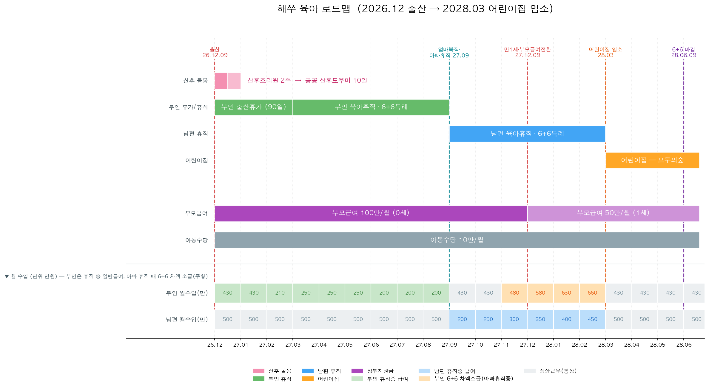

2026.12 출산 · 부모 순차 육아휴직 · 2028.03 어린이집 입소
목표: 2026.12.09 출산 → 최소 1년 가정보육 → 2027.12 이후 어린이집 입소
전제: 서울 광진구 · 첫째 · 부모 순차 육아휴직 · 어린이집 유형 미정
작성: 2026.06 기준 (제도·금액은 2026년 확정 기준, 변경 시 갱신 필요)
연계 문서: 임신출산 공공지원 체크리스트
⚠️ 수입 계산의 핵심 변수. 통상임금(기본급+고정수당, 세전)과 기업 규모에 따라 국가·기업 지원이 달라집니다.
| 항목 | 부인 (쏘카) | 남편 |
|---|---|---|
| 회사명 | 쏘카 | 모빌리전트 |
| 월 통상임금 (세전) | 430만원 | 500만원 |
| 월 실수령액 (참고) | 380만원 | 450만원 |
| 기업 규모 | 대규모기업 | 소기업 |
| 우선지원대상기업 여부 | 아니오 (확정) | 예 (소기업) |
| 고용보험 가입 | 예 | 예 |
| 육아휴직 급여 회사 추가지원(top-up) | 없음 — 육아휴직 중 회사 급여 미지급¹ (쏘카 PDF 확정) | 없음 — 국가 법규 기준만² |
| 부부합산 연소득 | 약 1.1억원 |
¹ 쏘카 제도 PDF로 확정: 출산전후휴가 최초 60일 회사 급여(통상 100%), 마지막 30일 고용보험(최대 월 210만). 육아휴직 중에는 회사 급여 미지급 → 급여는 전액 고용보험(= top-up 없음).
² 남편 회사(모빌리전트, 소기업)는 육아휴직 관련 별도 사내규정 없음 → 남편 급여·휴가는 전부 국가 법정 기준대로. 단 소기업=우선지원대상기업이라 남편 배우자 출산휴가 20일은 정부가 전액 지원(통상 100%, 상한 내).
타임라인 곳곳의 "6+6 특례"가 뭔지 먼저 알면 전체 그림이 한눈에 들어옵니다.
한 줄 요약: 생후 18개월 안에 엄마·아빠가 둘 다(같은 자녀로) 육아휴직을 쓰면, 각자 첫 6개월 동안 급여를 통상임금 100%로, 월 상한도 매달 올려가며(200→450만원) 줍니다. 순차로 써도 적용됩니다.
| 구분 | 일반 육아휴직급여 | 6+6 특례 (각자 첫 6개월) |
|---|---|---|
| 지급률 | 1~6개월 100% / 7개월차~ 80% | 6개월 내내 100% |
| 월 상한 | 1~3개월 250만 / 4~6개월 200만 / 7개월~ 160만 | 1개월 200 → 2개월 250 → 3개월 300 → 4개월 350 → 5개월 400 → 6개월 450만 |
| 조건 | 없음 | ① 부모 모두 육아휴직 사용(동시 X, 순차 O) ② 생후 18개월 이내 사용 |
이게 왜 우리 플랜을 결정했나 👇
💡 2026년부터 사후지급금 폐지 → 복직 안 해도 휴직 중 매달 전액 지급.

🟥 산후 돌봄 · 🟩 부인 휴직 · 🟦 남편 휴직 · 🟧 어린이집 · 🟪 정부지원금 | 점선 = 핵심 분기점(출산 / 엄마복직·아빠휴직 / 만1세·부모급여 전환 / 어린이집 입소 / 6+6 마감)
맨 아래 두 줄 = 부인·남편 월수입(만원). 부인은 휴직 중엔 일반급여(연두, 250·250·250·200·200·200)만 받고, 아빠 휴직 기간(27.11~28.02)에 6+6 차액이 소급돼 그때 수입이 올라감(주황, 480·580·630·660). 남편은 휴직 중 6+6 급여(하늘), 근무 중엔 통상임금(부인 430·남편 500, 회색).
| 시기 | 해쭈 나이 | 돌봄 주체 | 핵심 이벤트 |
|---|---|---|---|
| 2026.12.09 | 출생 | 엄마(출산휴가) | 출생신고·원스톱 신청, 아이사랑 입소대기 등록 |
| 2026.12.09~23 | 0~2주 | 산후조리원(2주) | 퇴소 후 산후도우미 이어서 |
| 2026.12 ~ 2027.03 | 0~3개월 | 엄마 출산전후휴가(90일) + 산후도우미 | 첫 예방접종·1차 영유아검진 |
| 2027.03 ~ 2027.09 | 3~9개월 | 엄마 육아휴직(6개월) | 6+6 특례(엄마 첫 6개월 전부 100%), 2·3차 검진 |
| 2027.09.10 | 9개월 | 전환점 | 엄마 복직 → 아빠 육아휴직 바로 시작 |
| 2027.09 ~ 2028.03 | 9~15개월 | 아빠 육아휴직(6개월) | 6+6 특례(아빠 첫 6개월 전부 100%) |
| 2027.12.09 | 만 1세 | 전환점 | 부모급여 100→50만원, 가정보육 1년 달성 ✅ |
| 2028.03 | 만 1세반 | 어린이집 | 신학기 입소(권장), 아빠 휴직 종료 무렵 |
| 2028.06.09 | 생후 18개월 | — | ⚠️ 6+6 마감일 — 이번 플랜은 양쪽 모두 28.3 내 완료라 여유 |
📌 핵심 한 줄: 엄마 휴직 6개월(~27.09) → 아빠 휴직 6개월(27.09~28.03) → 28.3 어린이집 신학기 입소. 부모 각자 6+6 특례 첫 6개월(100%)을 손실 없이 꽉 채우는 동선.
| 구간 | 기간 | 주체 | 급여 |
|---|---|---|---|
| 출산전후휴가 | 26.12.09 ~ 27.03.09 (90일) | 엄마 | 출산전후휴가급여 (회사+고용보험) |
| 엄마 육아휴직 | 27.03.10 ~ 27.09.09 (6개월) | 엄마 | 6+6 특례 첫 6개월 전부 100% |
| 아빠 육아휴직 | 27.09.10 ~ 28.03.09 (6개월) | 아빠 | 6+6 특례 첫 6개월 전부 100% |
| 어린이집 입소 | 28.03 ~ | — | 아빠 휴직 종료 무렵 신학기 등원 |
계획: 출산 후 산후조리원 2주(12.09~12.23경) → 집 복귀 후 산후도우미(산모·신생아 건강관리사) 이용
| 항목 | 내용 (해쭈 = 첫째·단태아 기준) |
|---|---|
| 소득 기준 | 정부 표준은 기준중위소득 150% 이하지만, 서울시는 소득 무관 예외지원 → 광진구 거주 = 소득 초과(연소득 1억)여도 신청 가능 |
| 지원 일수 | 단축 5일 / 표준 10일 / 연장 15일 중 선택 (첫째 단태아) |
| 서비스 시간 | 1일 8시간, 주 5일 (영업일 기준) |
| 신청 기간 | 출산예정일 40일 전(2026.10말~)부터 ~ 출산 후 60일 이내 |
| 이용(바우처 사용) | 보통 출산 후 60일 이내 사용 → 조리원 퇴소(12.23) 후 바로 시작 가능 (일정 미리 제공기관과 계약) |
| 신청처 | 복지로(bokjiro.go.kr) 또는 광진구보건소 방문 |
| 결제 | 국민행복카드 바우처로 결제 (유형 판정 후 제공기관 직접 선택·계약) |
① 일반(비바우처) 산후도우미 시세 (참고용)
② 정부 바우처 가격표 — 내 소득구간(150% 초과 = A-라형) 기준 (2026, 단태아·첫째아)
총 서비스가격은 소득과 무관하게 동일하고, 소득이 높을수록 본인부담 비중↑. 부부합산 연 1.1억(월 ~917만) → 3인가구 기준중위소득 150%(약 월 707만) 초과 → 가장 부담 큰 A-라형. 단 서울시는 소득초과여도 지원(광진구 거주) → 이용 가능.
| 기간 | 총 서비스가격 | 정부지원금(라형) | 내 본인부담금 | 참고: 타 구간 본인부담 |
|---|---|---|---|---|
| 표준 10일(2주) | 1,464,000원 | 700,000원 | 764,000원 | 150%이하 462,000 / 차상위 299,000 |
| 연장 15일(3주) | 2,196,000원 | 1,035,000원 | 1,161,000원 | 150%이하 893,000 / 차상위 671,000 |
③ 서울 산후조리경비 100만원과 조합 → 실부담
⚠️ 위 금액은 2026년 전국 표준 단가 (보건복지부 고시 · 가격표 참고). 광진구·제공업체별 실제 단가와 본인부담금 추가지원 여부는 광진구보건소에서 최종 확인. VIP/프리미엄 관리사 지정 시 추가금(1일 1~2만원 → 10일이면 +10~20만원) 별도.
바우처 제도 자체엔 관리사 지명 규정이 없지만(업체가 가용 인력 배정), 맘스홀릭 원문 294건을 역검색하니 윤스맘케어·이레아이맘은 "후기 보고 특정 관리사를 사전 지정요청"이 실제로 가능했음(후기 다수). 즉 지정예약은 "업체별 정책"이고, 이 두 곳은 됨 / 코코맘은 안 됨.
군자동 콕 집은 후기는 없으나, 광진구 출퇴근형 후기는 윤스맘케어에 압도적(광진 후기 다수). 군자동은 광진 출퇴근 권역.
| 순위 | 업체 | 지정예약 | 광진 커버 | 연락처 | 메모 |
|---|---|---|---|---|---|
| 1 | 윤스맘케어 | ✅ 후기 확인 | ✅ 광진 후기 압도적(22건) | 맘스홀릭/전화 | 광진 VIP 관리사 다수 → 아래 명단 |
| 2 | 이레아이맘 | ✅ 후기 확인 | 성동·광진동대문 지점 | ereimom.co.kr | 송명현·김경옥·김갑남 |
| 3 | 친정맘 | ❓ 전화확인 | 광진 전역(중곡 소재, 군자 인접) | ☎ 02-512-3885 | 개인 관리사 데이터 없음 |
| 3 | 검출(금줄) | ❓ 전화확인 | 성동·광진 | ☎ 02-6061-5425 | 개인 관리사 데이터 없음 |
❌ 제외(검증 실패): 에프엠산후도우미·베이비마스터·코코맘 — 각각 커버/등급 미확인 또는 지정 불가.
1. 특정 관리사 지명예약 되나요? (출산 전 미리) — 안 되면 후기 보는 의미 없음
2. 지명 시 지명료(추가금) 얼마? (바우처 외 별도인지)
3. 군자동 출퇴근형 배정 되나요? (조리원 퇴소 12.23 시작)
4. 정부 바우처 + 서울 산후조리경비 100만원 결제 조합 되나요?
5. 사전예약은 언제부터 확정해 주나요? (예정일 며칠 전)
데이터 출처: 네이버 맘스홀릭베이비 카페에서
'성동구 산후도우미'+'광진구 산후도우미'검색(2024.01~2026.06), 후기/추천 글 293건 수집·집계.
⚠️ 이 순위는 '업체 평판' 참고용 — 특정 관리사 지명예약 가능 여부는 위 🔑 섹션 참고(코코맘 등 대형업체는 지명예약 불가 확인). 군자동 출퇴근형으로 좁히면 후보가 달라짐.
⚠️ 이 순위는 "카페 내 후기·추천 언급 빈도와 어조" 기준이라 인기도(=시장점유·후기이벤트 영향 포함) 지표지, 검증된 품질평가가 아닙니다. 최종 선택 전 ① 사회서비스 품질평가 등급(A~F) 확인, ② 전화 상담 분위기, ③ 홈캠 설치 가능 여부를 꼭 직접 점검하세요. (원문 수집본: 산후도우미_크롤링/수집결과/)
| 순위 | 업체 | 후기 수 | 평판 요약 | 대표 후기 |
|---|---|---|---|---|
| 1 | 코코맘 | 93 | 이 지역 압도적 1위(광진·성동 커버). 단 ⚠️ 전화확인 결과 지정예약 불가(출산 후 가용 관리사 배정) → 후기 좋은 분 지명 어려움 | 문신숙 · 이운옥 · 김경옥 |
| 2 | 윤스맘케어 | 26 | 성동·광진·동대문 호평. VIP 관리사 만족 후기 다수 | 고영애 · 임○○ VIP |
| 3 | 이레아이맘 | 15 | 성동(답십리·행당) 강세, VIP 관리사 강력추천 글 | 송명현 VIP · 김갑남 |
| 4 | 케이맘 | 13 | "내돈내산 솔직후기" 호평, 3주 이용 만족 | 3주 후기 · 솔직후기 |
| 5 | 행복한돌봄 | 9 | 성동 모유수유 케어 호평 | 모유수유 후기 · 이필자 |
| 5 | 다산케어 | 9 | 성동·중구, 쌍둥이 케어 가능 | 쌍둥이 케어 · 후기 |
| 7 | 도담도담 | 8 | 서지안 대표·문명숙 관리사 강력추천 후기(아기에 진심) | 두 곳 비교·강추 · 재이용 |
| 8 | 닥터맘 | 7 | 2주+연장 강추 후기 | 박현숙 · 강추후기 |
| 9 | 아이미래로 | 5 | 방문 산후도우미, 첫째·둘째 재이용 | 찐후기 |
| 10 | 서울아가마지 | 4 | 사회적법인(개인업체 아님)·관리사 교육 철저·바우처 시 프리미엄 없음. 후기 적지만 질 호평 | 업체고르는 tip+찐후기 · 강영선 |
| 11 | 아임베베 | 3 | 동대문지사 신형숙 관리사 호평 | 신형숙 |
맘스홀릭 원문 294건 역검색 결과. 광진 출퇴근형 + 실명 관리사 + 지명 후기가 가장 많은 곳은 윤스맘케어(광진 22건), 그다음 이레아이맘. (코코맘은 후기 최다지만 지정 불가라 제외)
① 윤스맘케어 — 광진 VIP 관리사 (지정요청 0순위)
| 관리사 | 광진 후기 | 메모 |
|---|---|---|
| 이미숙(VIP) ★ | 288 · 281 | 광진, "둘째도 꼭 지정요청" — 지정 가능 직접 입증, 재지명 단골 |
| 김○숙(VIP) | 286 | 광진 |
| 임경자 | 280 | 광진 강추 |
| 권오헌 | 289 | 광진 |
| 윤진○ | 142 | 광진 |
| 고영애·임○○(VIP)·김정희(VIP)·정옥희(VIP) | 127·097·133·139 | 성동권(광진 출퇴근 문의) |
② 이레아이맘 — 성동·광진동대문 지점 (지정 가능 확인)
| 관리사 | 후기 | 메모 |
|---|---|---|
| 송명현(VIP)·김경옥(VIP)·김갑남 | 043·044·049 | 김경옥=지정예약 후기. 단 "관리사 중간변경" 불만 후기 있음 → 계약서 명시 |
| (지점 강추) | 191 | 성동광진동대문 지점 |
③ 기타 (광진 커버) — 전화 확인용
💡 결론: 윤스맘케어에 먼저 전화 → 이미숙(VIP) 등 위 명단으로 지정요청(인기라 조기마감 → 예정일 40일 전 바로). 안 되면 차선 관리사 + 이레아이맘(김경옥 등) 병행. 모두 📞 5가지 질문으로 확인.
출처: 쏘카 피플성장팀 「출산/육아 지원제도」(2025.10.10). 신청·문의 = 피플성장팀, 급여 = payroll@. 상세는 취업규칙·법령 우선.
💡 핵심 반영: 부인도 육아휴직 중 회사 top-up 없음(국가 기준만) 확정. 대신 출산 일시금 60만 + 복직 후 비과세 육아수당이 추가 이득. 6+6 순차 플랜은 "부모 모두 3개월↑" 조건도 충족 → 1년6개월 연장 카드가 살아있음.
| 항목 | 0세 (26.12~27.12) | 1세 (27.12~28.12) | 비고 |
|---|---|---|---|
| 부모급여 | 월 100만원 | 월 50만원 | 가정보육 시 현금. 어린이집 등원 시 보육료 바우처로 차감 |
| 아동수당 | 월 10만원 | 월 10만원 | 만 8세 미만(96개월)까지. 광진구=수도권 월 10만원 |
| 비과세 육아수당(쏘카) | 27.09 복직 후 적용 | 적용 | 급여 수령 중 월급 중 20만원 소득세 비과세 → 실수령 소폭↑(현금 추가 아님). 신청 payroll@ |
| 서울형 손주돌봄수당 | (해당 없음) | 24개월부터 가능 | 친정엄마 돌봄 시 월 30만원 — 순차휴직이면 대상 아님 |
어린이집 등원 시작 시: 만 0·1세는 보육료가 부모급여 한도 내에서 전액 지원 → 추가 차액 발생 거의 없음. (1세 보육료 > 50만원이면 차액은 정부지원, 부모 현금 0)
💡 절세: 산후조리원 비용 연말정산 세액공제(최대 30만원) — 영수증 보관. 육아휴직급여는 비과세.
실제 통상임금 적용: 부인 430만원 / 남편 500만원 (세전, 육아휴직급여는 비과세).
남편 회사(소기업)·부인 회사(쏘카) 둘 다 육아휴직 중 회사 급여 미지급 → 국가 법정 기준만. (쏘카 제도 PDF 확정: 육아휴직급여 전액 고용보험)
| 구간 | 지급률 | 상한 |
|---|---|---|
| 6+6 특례 (생후 18개월 내 부모 모두 사용, 각자 첫 6개월) | 통상임금 100% | 1개월 200 → 2개월 250 → 3개월 300 → 4개월 350 → 5개월 400 → 6개월 450만원 |
| 일반 육아휴직급여 1~6개월차 (6+6 미적용 시) | 통상임금 100% | 1~3개월 250 / 4~6개월 200만원 |
| 7개월차 이후 | 통상임금 80% | 월 160만원 (하한 70만원) |
2026년부터 사후지급금 폐지 → 매달 전액 즉시 수령.
| 월 | 구분 | 국가 지원 (통상 430만) | 기업 지원 | 비고 |
|---|---|---|---|---|
| 26.12 | 출산전후휴가(1) | 회사 430만¹ | 회사 부담 | 첫 60일 회사 통상 100% |
| 27.01 | 출산전후휴가(2) | 회사 430만¹ | 회사 부담 | |
| 27.02 | 출산전후휴가(3·마지막30일) | 고용보험 상한 ~210만² | 차액 회사규정 확인 | |
| 27.03 | 육아휴직 1개월차 (6+6) | 200만 | 없음 | |
| 27.04 | 2개월차 (6+6) | 250만 | 없음 | |
| 27.05 | 3개월차 (6+6) | 300만 | 없음 | |
| 27.06 | 4개월차 (6+6) | 350만 | 없음 | |
| 27.07 | 5개월차 (6+6) | 400만 | 없음 | |
| 27.08 | 6개월차 (6+6) | 430만 | top-up? | 통상 100%(<상한450), 6+6 마지막 |
| 27.09~ | 복직 | 정상 급여(실수령 380만) | — | 육휴 종료, 첫 6개월 전부 100% 수령 |
| 육아휴직급여 합계 | 약 1,930만원 | + 회사 top-up | (출산휴가급여 별도) |
⏱ 수령 시점 주의: 위 6+6 금액은 '최종 수령(효과) 기준'. 실제로는 휴직 중(27.03~27.08)엔 일반급여(250·250·250·200·200·200)를 받고, 차액(0·0·50·150·200·230)은 아빠가 휴직할 때(27.09~28.02) 매달 소급 지급됨. → 현금 흐름은 타임라인 이미지의 부인 월수입 행 참고. (아빠가 6개월을 다 못 채우면 채운 개월수만큼만 소급 — 환수는 없고 그만큼 덜 받음)
남편 회사(소기업)는 별도 규정 없음 → 아래는 국가 법정 기준만. 통상 500만이라 6+6 상한(200~450만)에 전부 도달. 엄마 복직과 동시(27.09)에 바로 시작.
| 월 | 구분 | 국가 지원 (통상 500만) | 기업 지원 | 비고 |
|---|---|---|---|---|
| 27.09 | 1개월차 (6+6) | 200만 | 없음 | 엄마 복직과 동시 시작 |
| 27.10 | 2개월차 (6+6) | 250만 | 없음 | |
| 27.11 | 3개월차 (6+6) | 300만 | 없음 | |
| 27.12 | 4개월차 (6+6) | 350만 | 없음 | 부모급여 50만 전환월 |
| 28.01 | 5개월차 (6+6) | 400만 | 없음 | |
| 28.02 | 6개월차 (6+6) | 450만 | 없음 | 통상 500>상한450 → 450 |
| 28.03~ | 복직 | 정상 급여(실수령 450만) | — | 어린이집 신학기 입소 무렵 |
| 육아휴직급여 합계 | 약 1,950만원 | — | 6개월 전부 100% 특례, 1인 최대치 |
🍼 남편 배우자 출산휴가 20일(출생 무렵, 26.12): 소기업=우선지원대상 → 정부 전액 지원(통상 100%, 상한 내). 육아휴직과 별개로 챙길 것.
¹ 출산전후휴가급여: 쏘카는 우선지원대상 아님 → 첫 60일 회사가 통상임금 100%(고용보험 상한 차감), 마지막 30일은 고용보험.
² 출산전후휴가급여 고용보험 상한은 월 약 210만원 수준(2026년 정확치는 고용보험 확인). 통상 430만 > 상한 → 마지막 30일 차액 보전은 쏘카 규정에 따라 갈림.
³ 기업 지원(top-up): 쏘카 PDF 확인 결과 육아휴직 중 회사 급여 미지급(top-up 없음). 단 출산 시 출산선물 30만+경조금 30만, 복직 후 비과세 육아수당 월 20만 별도 이득. 남편(모빌리전트)은 별도 규정 없음 → 국가 지원만.
| 시기 | 부인 | 남편 | 부모급여 등 | 월 합계(대략) |
|---|---|---|---|---|
| 26.12~27.01 | 출산휴가 430만(회사) | 정상 450만 | 부모급여 100 + 아동 10 | 약 990만 |
| 27.02 | 출산휴가 ~210만(고용보험) | 정상 450만 | 부모급여 100 + 아동 10 | 약 770만 |
| 27.03~27.08 | 육휴 200~430만 | 정상 450만 | 부모급여 100 + 아동 10 | 약 760~990만 |
| 27.09~27.11 | 복직 380만 | 육휴 200~300만 | 부모급여 100 + 아동 10 | 약 690~790만 |
| 27.12~28.02 | 정상 380만 | 육휴 350~450만 | 부모급여 50 + 아동 10 | 약 790~890만 |
| 28.03~ | 정상 380만 | 복직 450만 | 보육료 바우처 전환 + 아동 10 | 약 840만 |
⚠️ 가구소득 저점은 27.09(부인 복직 직후 + 남편 휴직 1개월차 200만) → 약 690만. 이후 남편 육휴급여가 매달 올라가며 회복. 이전(엄마 9개월) 플랜의 160만 저점 구간이 사라져 전체적으로 더 안정적.
💡 누적 육아휴직급여(국가): 부인 약 1,930만 + 남편 약 1,950만 = 부부 합산 약 3,880만원. 부인 육휴급여는 480만 줄지만, 부인이 3개월 일찍 복직해 정상급여(380만)를 받으므로 가구 총소득은 오히려 증가. (+ 첫만남 200만, 부모급여·아동수당 별도)
상황: 남편 회사(모빌리전트)는 인사담당자 없음 → 남편이 직접 대표 결재를 받고, 공공지원(육아휴직급여 등)은 본인이 고용보험에 직접 신청해야 함.
| 단계 | 시기 | 주체 | 내용 |
|---|---|---|---|
| 1. 육아휴직 신청서 제출 | 휴직 30일 전(~2027.08) | 남편→대표 | 기간(27.09.10~28.03.09) 명시, 대표 결재·서명 |
| 2. 육아휴직 확인서 발급 | 결재 후 | 대표(회사) | 고용보험 양식 작성·서명 → 회사가 고용보험에 등록(세무대리인 위임 가능) |
| 3. 4대보험 휴직 신고 | 휴직 시작 시 | 회사/세무대리인 | "보수 미지급(휴직)" 신고 → 건강보험 납부유예·경감 |
| 4. 육아휴직급여 직접 신청 | 휴직 시작 후 매월(또는 1개월 단위), 12개월 내 | 남편 본인 | 고용24(work24.go.kr) 온라인 신청, 6+6 특례 체크 |
| 5. 배우자 출산휴가 20일 | 출생 무렵(26.12) | 남편→대표 | 동일하게 대표 결재 → 급여는 정부 전액 지원(우선지원대상) |
4단계 필요서류: 육아휴직 확인서(회사 발급), 통상임금 증빙(근로계약서·급여명세서), 부인 육아휴직 사용 확인(6+6용).
| 순위 | 어린이집 | 유형 | 28.3 입소(15개월) 가능? | 메모 |
|---|---|---|---|---|
| 1순위 | 모두의숲 (쏘카 사옥) | 직장 | ✅ | 임직원 자녀 우선입소·부인 출퇴근 동선 일치·보육 질↑. 부인 재직(휴직 포함) 중 자격 유지 |
| 2순위 | 군자어린이집 | 국공립 | ✅ | 저렴·안정. 출생 직후 아이사랑 대기 등록 |
| 2순위 | 군자꿈모음어린이집 | 국공립 | ✅ | 〃 |
| 2순위 | 송정햇살어린이집 | 국공립 | ✅ | 〃 |
| 보조 | 즐거운산들어린이집 | 민간 | ❌ | ⚠️ 24개월부터 입소 → 해쭈는 빨라야 2028.12(만 2세) 가능. 초기 입소용 아님, 나중 전원 옵션으로만 |
★ 모두의숲(직장어린이집)이 1순위인 게 큰 이점. 직장어린이집은 임직원 자녀 우선배정이라 일반 대기열보다 입소가 훨씬 수월. 부인이 27.09에 이미 복직해 있으므로 28.3 입소 시 출근길에 등·하원 → 동선·시간 최적.
⚠️ 즐거운산들은 24개월~이라 목표 시점(28.3, 만 15개월)엔 못 들어감. 초기 입소 후보는 모두의숲 + 국공립 3곳으로 좁혀짐.
모두의숲 관련 확인 사항 (쏘카 인사팀/어린이집에 문의):
| 옵션 | 시점 | 해쭈 나이 | 반 | 장단점 |
|---|---|---|---|---|
| A. 신학기 입소 (권장) | 2028.03 | 약 15개월 | 1세반 | 자리 가장 많음, 동기 많아 적응↑. 단 아빠 휴직이 28.3.09 종료 → 적응기 커버하려면 1~2개월 연장 고려 |
| B. 수시 입소 | 2027.12~2028.02 | 12~14개월 | 0세반 | 1년 채우자마자 가능하나 0세반 중도 자리 적음, 겨울 잔병치레 |
반 편성 기준: 매년 3월 1일 만 나이. 2026.12.09생 해쭈 → 2028.3.1 기준 만 1세 = 1세반.
| 유형 | 비용 | 보육 질·환경 | 대기 | 한줄평 |
|---|---|---|---|---|
| 국공립 | 가장 저렴(보육료 지원) | 균질·안정, 교사 처우 좋음 | 매우 김 | 1순위로 일찍 대기 걸기 |
| 사회복지법인/법인·단체 | 저렴 | 시설별 편차 | 김 | 국공립 대안 |
| 직장 어린이집 | 저렴·우선입소 | 좋음, 출퇴근 동선 | 회사에 있으면 강력 | 부모 직장에 있는지 확인 필수 |
| 민간 | 보통(특별활동비 추가) | 시설·프로그램 다양 | 보통 | 안전판으로 병행 대기 |
| 가정 어린이집 | 보통 | 소규모·가정적, 영아에 적합 | 보통 | 0~2세 영아기엔 오히려 장점 |
추천 조합: 모두의숲(직장, 1순위) + 국공립 3곳(군자·군자꿈모음·송정햇살, 2순위) 동시 대기. 직장어린이집이 우선입소라 사실상 1순위 안정권이지만, 정원 초과·정책 변경 대비해 국공립도 같이 걸어둘 것. 즐거운산들(민간)은 24개월 이후 전원 카드로만 보관.
| 리스크 | 대비 |
|---|---|
| 28.3 국공립 대기 안 빠짐 | 가정·민간 동시 대기, 수시 입소 병행 |
| 아빠 휴직(27.09~28.03)과 어린이집 적응기(28.3) 겹침이 짧음 | 아빠 휴직 1~2개월 연장(7개월차~ 80%·월160만)으로 적응기 커버 |
| 어린이집 적응 실패·잔병치레 | 아빠 휴직 연장(최대 18개월), 가정보육 유지 |
| 갑작스런 돌봄 공백 | 아이돌봄서비스(정부지원) 사전 등록, 친정 백업 |